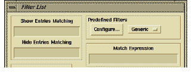
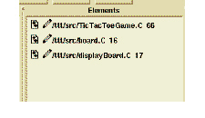

Creating a Constant Query
The Filter List dialog box is enhanced to include metrics and attributes for filtering, formatting, and sorting. Through the Match Expression field in the Filter List dialog box, you can create an Access (command-line) query and apply it to a column.

When you set an Access query, you create a static, or constant, filter on the contents of that column. Because Access supports metrics, you can use this field to apply a metrics filter.
See the DIScover Access Guide for information on the commands, attributes, and operators available through Access.
Using this field requires some knowledge of Access.
Note: In the Filter List, you do not need to use the Access command “apply” to query multiple entities for a matching attribute.
The Match Expression field takes multiple queries using boolean operators, and you can use any attribute or valid Access attribute expression. An advantage to using this procedure over the Metrics dialog box is that you can use the Filter List for any column that shows entities—any column can become a metrics querying tool
Example
met_CC > 12 && met_DEPTH > 5
For more information on writing Access expressions, see the DIScover Access Guide.
This is an example of an Access expression; specifically, it is a string that searches for entities in the information model with a Cyclomatic Complexity metric greater than 12 and a Nested Control Structure depth metric greater than 5.
Once you apply this filter, the filter remains in effect until you reset it (or quit DIScover) and the column to which you apply this filter turns a lighter shade of color to remind you that a filter is in place.
